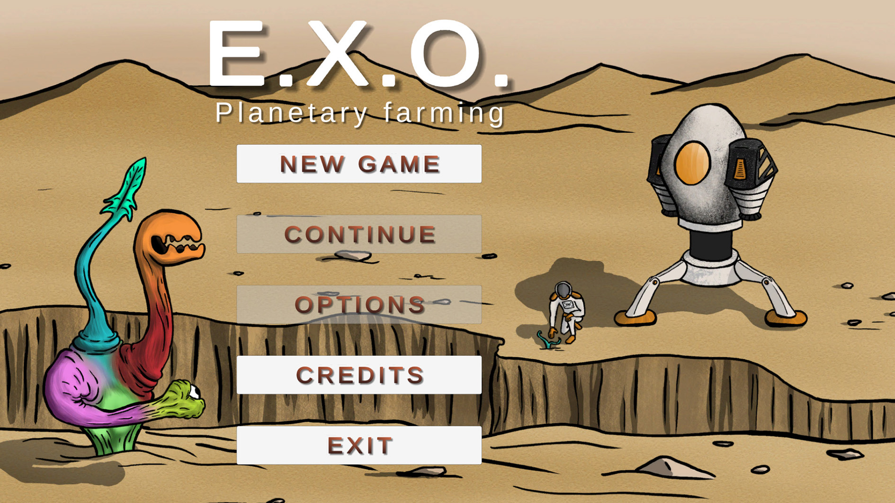
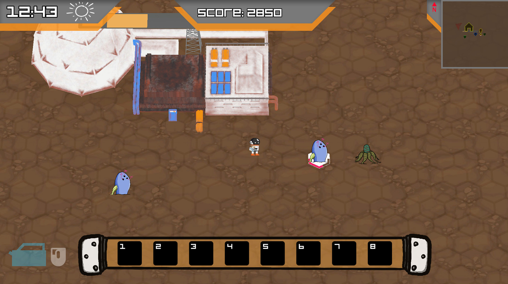
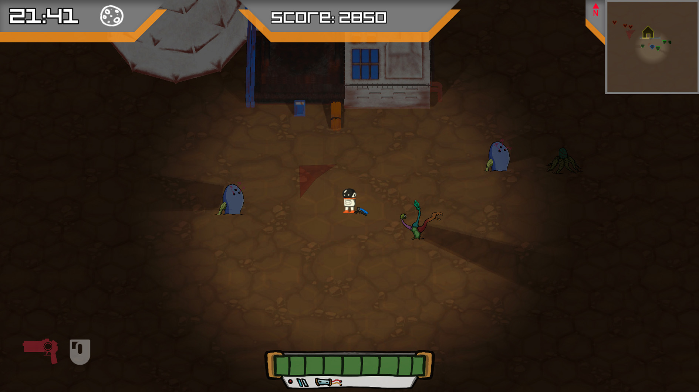
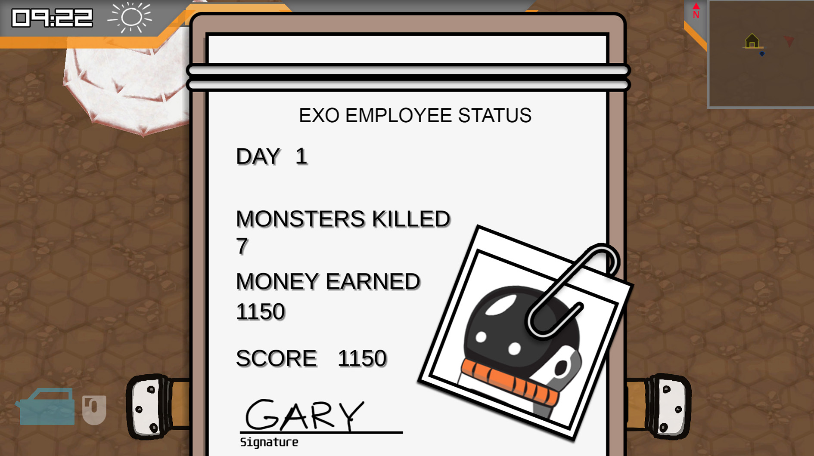

E.X.O.
Game Design · Development · Testing
Designing an engaging game that blends combat and farming mechanics.

Role
Test Lead · Game Designer
Context
University of Saskatchewan — Academic Project
Timeline
3 months
Focus
Game UX · Quality Assurance · Gameplay Testing · Game Design · Systems Design
Tools
Unity · Unity Analytics · Visual Studio Code
Technology
C#
E.X.O. is a third-person farming combat game about a xenobotanist tasked with restoring the natural ecosystem of a distant wasteland planet. Working for E.X.O. Corp, players must plant and cultivate new life while defending the growing ecosystem from eldritch creatures that have made the planet their home.
The game combines farming and combat into a connected gameplay loop, requiring players to balance growing the ecosystem with defending it from threats. The project explored how players learn and interact with multiple systems, how feedback supports decision-making, and how progression can connect different gameplay activities.
Developed over three months by a ten-member team, the project followed an iterative development process that included a project pitch, asset and requirements documentation, weekly sprint reviews, and prototype, alpha, beta, and final product demonstrations.
Contributions
As Test Lead, I focused on implementing unit and functionality testing with players, analysing Unity Analytics, identifying and recommending bug resolutions, and balancing gameplay features. I also contributed to game design and lead meetings, coded day-night cycles, 3D and 2D lighting systems, and UI elements, prepared project reports, and participated in the final demonstration.
Start Menu

Day Play

Night Play

Status Check
